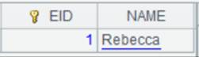
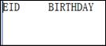
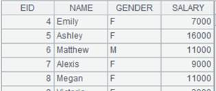
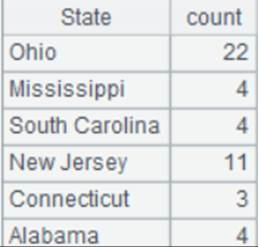
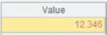
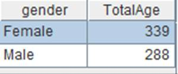
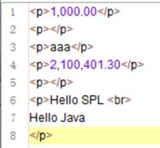
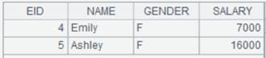
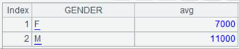

Description:
A foreign-key-style join between a cursor and a table sequence/record sequence.
Syntax:
cs.join(C:.,T:K,x:F,¡; ¡;¡)
Note:
The function matches foreign key field C of cursor cs with the key of parameter T to find the corresponding records in T. Add an F field represented by x, which is T¡¯s field expression, to cs and return the original cursor.
K can be omitted or represented by #. When omitted, K is T¡¯s key by default; when written as #, K is the ordinal number of a record of table T, which means foreign key numberization. Simply put, primary key values of the dimension table are natural numbers starting from 1, which are row numbers corresponding to table records. In this case, we can directly locate dimension table records according to key values by row numbers. This helps speed up association with the dimension table and increase performance.
If there is an F field in cs, just modify the existing field of ch. Use the latest time calculated through now() when time key value is not specified.
It supports the multicursor.
Parameter:
|
cs |
A cursor/A multicursor |
|
C |
Cursor cs¡¯s foreign key; separate multiple fields in a composite key with the colon |
|
T |
A table sequence/A record sequence |
|
K |
T¡¯s key |
|
x |
T¡¯s field expression |
|
Field name in expression x. |
Option:
|
@i |
Delete a record with a non-matching foreign key value; by default, a non-matching record will be represented by null |
|
@o(F;¡) |
Use the record as the value of F field to generate a new record; here expression x can be written as ~, which represents the whole record of cs |
|
@d |
If parameters x:F are absent, only perform a filtering over the cursor by deleting its records where the foreign key is matched |
|
@m |
Enable a merge join when cs is ordered by C and T is ordered by K |
Return value:
The orignal cursor
Example:
|
|
A |
|
|
1 |
=connect("demo").cursor("SELECT * FROM CITIES") |
Below is data of CITIES table:  |
|
2 |
=connect("demo").query("SELECT * FROM STATECAPITAL where STATEID<30").keys(STATEID) |
Below is data of STATECAPITAL table:  |
|
3 |
=A1.join(STATEID,A2,CAPITAL) |
Associate CITIES table and STATECAPITAL table through the foreign key – parameter K is by default STATEID, STATECAPITAL¡¯s key, and add STATECAPITAL table¡¯s CAPTITAL field to result to generate a new table sequence  |
|
4 |
=A1.join(STATEID,A2:#,CAPITAL) |
STATEID field values are natural numbers starting from 1, which correspond to ordinal numbers of records of STATECAPITAL table, so we can write parameter K as # to use ordinal numbers in STATECAPITAL table so that efficiency can be boosted; return same result as A3 |
|
5 |
=A1.join@i(STATEID,A2,CAPITAL) |
Use @i option to delete records where foreign key values are non-matching; by default write the records as nulls
|
|
6 |
=A1.join@i(STATEID,A2) |
Use @i option to perform filtering only on CITIES table when parameters x:F are absent  |
|
7 |
=A1.join@d(STATEID,A2) |
Use @d option to delete records matching the foreign key when parameters x:F are absent and perform filtering only on CITIES table  |
|
8 |
=A1.join(STATEID,A2,abc) |
Write a record as null when parameter x cannot be found in A2  |
|
9 |
=A1.join@k(STATEID,A2,~:STATES) |
Use @k option to record correspondence relationship between STATES and STATEID in result table sequence to identify foreign key for pre-association when parameter x is written as ~  |
|
10 |
=A1.join@o(cities;STATEID,A2,CAPITAL) |
Use @o option to make the whole original record cities value to generate a new record; this is equivalent to writing parameter x as ~  |
|
11 |
=A1.join(STATEID,A2,CAPITAL:NAME) |
Modify the existing field as NAME already exists in CITIES table  |

Related function: